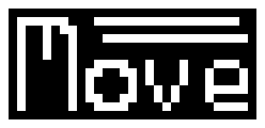
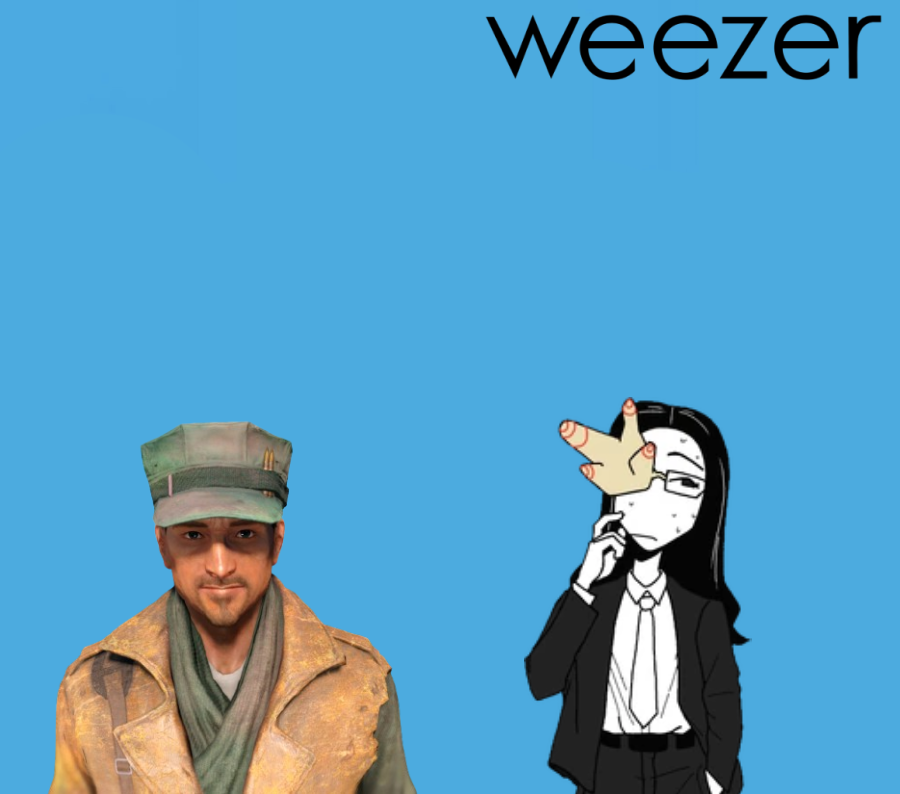
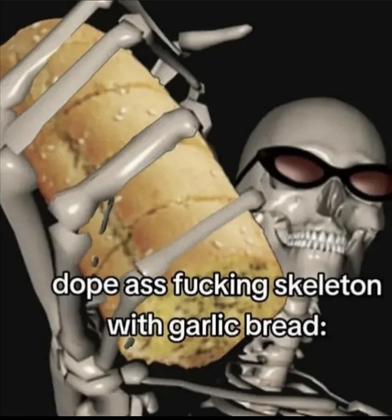

HTML PostApo
Nowa Gra
Wczytaj Grę
Twórcy
v0.1 (indev)
Twórcy
CornSeller - Kod oraz design gry
a.gent.leman - Grafika postaci niezależnych
Gra używa dużo nielicencjonowanych
grafik i muzyki pokroju royalty-free.Kontent
w niektórych przypadkach mógł zostać lekko zedytowany.
Używa silnika Move (w wersji v1.2 lub eksperymentalnej)

GitHub
Powrót

Wczytaj grę
Załaduj grę ze swojego pliku .hpasave
Wczytaj plik
Powrót
